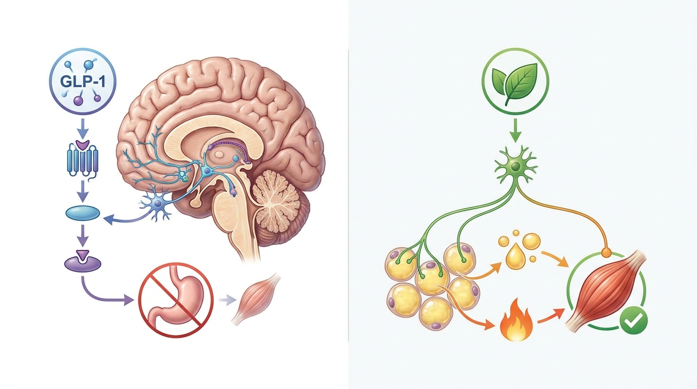

Regaining Weight After Stopping Mounjaro or Ozempic? Herbal Metabolic Diet Therapy That Enhances Metabolism Without GLP-1 Side Effects or Muscle Loss
GLP-1 class drugs act solely on appetite suppression pathways and do not fundamentally increase the Basal Metabolic Rate (BMR) itself; rather, cases involving concurrent loss of muscle mass, known as Sarcopenia, during the weight loss process have been reported. Upon drug discontinuation, the suppressed appetite recovers, whereas the already lowered BMR does not immediately rebound, potentially leading to a rapid weight regain phenomenon (yo-yo effect).
1. The Appetite Suppression Mechanism of GLP-1 Class Drugs and the Biochemical Causes of Weight Regain After Discontinuation
Obesity treatment drugs belonging to the GLP-1 receptor agonist class, such as Mounjaro, Ozempic, and Saxenda, induce weight loss by acting on the appetite center of the brain to promote satiety and slow gastric emptying, thereby reducing caloric intake. However, this pharmacological mechanism is focused on appetite suppression and is distinct from a direction that fundamentally increases the total amount of energy the body expends, namely the Basal Metabolic Rate (BMR) itself.
Clinically, concerns have been continuously raised in the academic community that the weight loss process using GLP-1 class drugs may be accompanied by a pattern of muscle mass reduction, or Sarcopenia, in addition to loss of body fat. Since muscle is the tissue responsible for a significant portion of the human body's BMR, muscle loss results in a decrease in the amount of energy expended at rest. If drug administration is discontinued in this state, the previously suppressed appetite returns to normal, whereas the already lowered BMR does not recover in the short term; consequently, the ingested calories are not consumed and are stored as fat, potentially leading to Weight Regain.
Furthermore, cases of gastrointestinal side effects such as nausea, vomiting, constipation, and indigestion have been reported due to the mechanism of delaying gastric emptying, and this gastrointestinal discomfort can act as a factor that lowers long-term drug compliance.
2. The BodyallFit Herbal Metabolic Enhancement Mechanism for Maintaining Basal Metabolic Rate (BMR) and Preventing Sarcopenia

The principle of the BodyallFit Weight Loss Program (Metabolic Correction Protocol) is to coordinate bodily metabolism by appropriately activating the sympathetic nervous system to increase the Resting Metabolic Rate and promote fat decomposition (Lipolysis), rather than relying on a single pathway of appetite suppression like GLP-1 class drugs. This approach goes beyond suppressing appetite to increase the total amount of energy the body expends, aiming to preserve both muscle mass and BMR simultaneously.
The BodyallFit herbal prescription focuses on this principle of metabolic enhancement to move beyond mere reliance on appetite suppressants, inducing fat decomposition by enhancing the metabolic rate itself. Furthermore, by combining this with behavioral modification therapy through the Chief Director's dedicated 1:1 care, it can be considered a conservative treatment option that contributes to preventing the weight regain phenomenon that easily occurs after drug discontinuation.
| Category | GLP-1 Drugs (Mounjaro, Ozempic, etc.) | BodyallFit Herbal Metabolic Enhancement Program |
|---|---|---|
| Mechanism of Action | Suppression of appetite center, delayed gastric emptying | Sympathetic nervous system activation, increased Resting Metabolic Rate (RMR) |
| Impact on Muscle Mass | Concerns of Sarcopenia accompanying fat loss | Aims to preserve muscle mass and BMR |
| Major Side Effects | Gastrointestinal discomfort such as nausea, vomiting, constipation | Designed to minimize gastric burden through constitution-specific prescriptions |
| Progress After Discontinuation | Risk of yo-yo effect upon appetite recovery in a state of lowered BMR | Aims to maintain metabolism through concurrent 1:1 dedicated behavioral modification |
3. Analysis of Academic Clinical Papers Comparing GLP-1 Class Obesity Drugs (Muscle Loss, Gastrointestinal Disorders, Weight Regain) with Herbal-Based Metabolic Enhancement Treatment
The randomized double-blind clinical trial study published by Kim, et al. (2008) in the Journal of Acupuncture and Meridian Studies provides scientific evidence for herbal-based metabolic enhancement therapy by demonstrating that the combined administration of herbal medicines such as Ephedra sinica and Evodia rutaecarpa increases Resting Metabolic Rate and positively affects body composition. Unlike GLP-1 class drugs, which are primarily confined to appetite suppression pathways, this suggests the existence of a distinct biochemical approach that appropriately activates the sympathetic nervous system to increase energy expenditure and maintain basal metabolic rate[1].
Meanwhile, the study published by Kelly, et al. (2015) in the journal Endocrine Development provides pharmacological evidence for the mechanism by which GLP-1 receptor agonists induce satiety by acting on appetite centers, thereby supporting weight reduction; however, since this mechanism primarily focuses on appetite suppression, it implies the necessity of clinical consideration regarding changes in body composition, such as a potential decrease in Basal Metabolic Rate (BMR) or muscle loss (Sarcopenia). From this perspective, the BodyallFit Weight Loss Program (Metabolic Correction Protocol) holds academic significance as a conservative treatment option that regulates bodily metabolism to promote fat-focused decomposition and preserve muscle mass and BMR, rather than relying solely on appetite suppression mechanisms, thereby managing the risk of weight regain following drug discontinuation[2].
Since the possibility of concurrent use and the composition of the prescription may vary depending on GLP-1 drug intake status, medical history, and individual constitution, it is advisable to determine the treatment direction only after an accurate diagnosis of one's individual metabolic status through a 1:1 consultation with a professional Korean medicine doctor.
4. The Metabolic Correction Process of the BodyallFit Weight Loss Program
The BodyallFit Weight Loss Program (Metabolic Correction Protocol) begins by first identifying the causes of an individual's lowered Basal Metabolic Rate and the state of metabolic imbalance through body composition analysis and constitutional diagnosis. Based on this, herbal medicine is prescribed in a direction that induces the enhancement of Resting Metabolic Rate and fat decomposition, while also considering the preservation of muscle mass and BMR.
Furthermore, through 1:1 dedicated KakaoTalk consultations with the Chief Director, behavioral modification care covering overall lifestyle habits—such as dietary habits, sleep patterns, and activity levels—is provided concurrently. This ensures that the process helps patients form sustainable metabolic maintenance habits, rather than simply relying on medication intake. This approach is part of the metabolic correction protocol aimed at managing the yo-yo effect that can occur after the discontinuation of appetite suppressants such as GLP-1 drugs, and the BodyallFit Weight Loss Program (Metabolic Correction Protocol) can be considered one of the safe and effective non-surgical, conservative treatment options aimed at preserving metabolism.